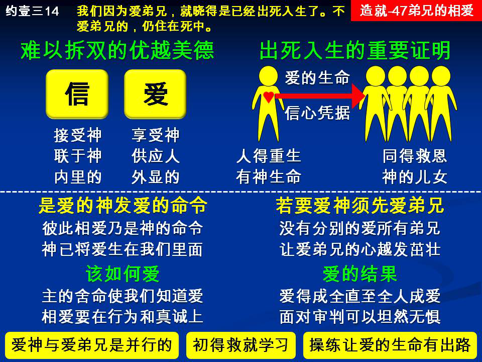

诗歌：诗622首、补752首
重要经文：
约翰福音五章24节：我实实在在的告诉你们，那听我话，又信差我来者的，就有永远的生命，不至于受审判，乃是已经出死入生了。
约翰壹书三章14节上：我们因为爱弟兄，就晓得是已经出死入生了。
约翰壹书三章11节：我们应当彼此相爱；这就是你们从起初所听见的信息。
纲目要点：
壹 爱的生命－他是你的弟兄，所以你爱他：
一 你如果爱弟兄，就晓得是已经出死入生了。
二 爱弟兄，是真信心的凭据。
贰 爱的命令：
一 彼此相爱乃是神的命令。
二 神生我们的时候，也把爱生在我们里面。
参 如果要爱神，就应当爱弟兄：
一 爱弟兄不是因为他可爱才爱，乃是因为他是弟兄。
二 应该让爱弟兄的心越长越刚强，越长越有力量。
肆 怎样爱弟兄：
一 主为我们舍命，我们从此就知道何为爱。
二 爱弟兄要在行为和诚实上显明出来的。
伍 爱的结果：
一 爱在我们里面得以完全，在审判的日子坦然无惧。
二 起头学习爱弟兄，让爱的生命在我们身上有出路。
信息选读：
他是你的弟兄，所以你爱他
你与许多人交朋友，你很喜欢他们；或者，你佩服许多人，你很尊敬他们；但是，你对他们的感觉，与你对同胞兄弟姊妹的感觉，总是有些不同。若是有一个人是你母亲生的，是你的兄弟或姊妹，你就很自然的对他有一个特别的感觉，有一个莫名其妙的感觉。这一个感觉，是一个很自然的爱的感觉。你有这一个感觉，就证明你和他是一家。照样，在这里有一个人，他的外貌，他的家庭，他所受的教育，他的性情，他的兴趣，也许与你完全两样；可是，因为他也是相信主耶稣的，你对他就有一种说不出来的感觉，有一个莫名其妙的感觉，觉得这一位是你的弟兄，好像比你的亲兄弟还要亲。你有这一个感觉，就证明你是已经出死入生的人。在你里面有一个『爱』，证明你从前那一个『信』是真的；因为你从前那一个『信』是真的，所以你就有了这一种说不出来的『爱』。这一个爱弟兄的心是很特别的，不是因为别的缘故而爱，只是因为他是弟兄而爱。不是因为他与你意气相投，所以你爱他，只是因为他是你的弟兄，所以你爱他。
爱弟兄是真信心的凭据
我们在神面前必须看见这件事，就是说，爱弟兄，是真信心的凭据。我们没有其他更好的方法分别什么人的信心是真的，什么人的信心是假的。如果我们没有辨别的能力，那么福音传得越完全，假冒的危险就越大；福音传得越透彻，假冒的人就越容易混进来；福音越是传得满了恩典，马虎随便的人就越多。所以，我们总得有一条分别的路，总得找出一个方法来，认清谁是真的信，谁是假的信。约翰的书信明显的给我们看见，分别真的信心和假的信心的路，不是在信心里，而是在爱心里。不是问信心如何，而是问爱心如何。信心如果是对的，就必定有爱心。没有爱，就证明没有信；有爱，就证明有信。我们从爱这一边去看信，就能看得清楚。要知道一个人是不是真基督徒，只要看他对于神其他的儿女，有没有一种特别的味道，特别的吸引力。神所给我们的生命，不是一个独立生存的生命。神所给我们的生命，自然而然要我们与别的得着同样生命的人接近，自然而然要我们与别的得着同样生命的人相爱，有互相亲密的感觉。有这一个感觉的人，就是已经出死入生的人。
神生我们的时候，也把爱生在我们里面
神给我们那一个爱，神也给我们一个爱的命令。神先赐给我们那一个爱，然后给我们那一个爱的命令，要我们彼此相爱。今天我们要将神所给我们的那一个爱，照着神的命令来彼此相爱。神所摆在我们里面的爱，我们要按着它的性质来用它，不应当毁它、伤它。我们为什么要彼此相爱？因为爱是从神来的。有爱的人都是由神而生，没有爱的人就不认识神，因为神自己就是爱。神生我们的时候，也把爱生在我们里面。从前，我们里面没有爱，但今天我们里面有爱。
恨弟兄的是在黑暗里，且在黑暗里行
我们要知道，爱弟兄并不是因为他可爱才爱，乃是因为他是弟兄，所以爱。因为是弟兄，所以爱他，这是惟一的原因。所以，如果在这里有一个人，他知道你是弟兄，他知道你是属乎主的，而他还能恨你，那就证明他在里面没有生命。因为这里的话是说，『恨弟兄的是在黑暗里，且在黑暗里行。』住是住在黑暗里，行也行在黑暗里。换句话说，圣经根本不承认有恨弟兄的事，根本不相信有这一个可能。如果有一个人，你知道他是弟兄，而你竟然恨他，那你自己只得说，『主，我不是住在光明中的人，我是在黑暗里，且在黑暗里行的人！』
正常的情形是这样的：假使有一位弟兄，他所作的许多事情，你不以为然，你可以劝戒他、责备他，但是你不恨他。如果他作一件事，使你很生气，你能发怒到一个地步，用很重的话责备他，但是你里面没有恨。你就是要像马太十八章所说的那样『告诉召会』，你的目的还是为要得着他，还是为要挽回他。如果你对于他除了攻击和拆毁之外，没有一点挽回的意思，那就证明你不是一个弟兄。马太十八章的那一个弟兄所以告诉召会，目的是要得着他的弟兄。
我们要小心不要随便得罪弟兄
如果有人对弟兄有责备，只是拆毁，那就证明他里面没有爱，只有恨。恨弟兄就是杀弟兄！从前有弟兄写信问达祕关于革除的事，达祕第一句话就说，我想，一个罪蒙赦免的罪人，去革除另外一个罪人，这是全世界最可怕的事。全世界上没有第二件事比这一件事再可怕，就是一个罪得着赦免的罪人，去革除另外一个罪人。达祕这样的态度，是出乎爱的生命的态度。不错，许多事情需要对付；在召会中如有必要；可以革除犯罪的弟兄姊妹；但是，在对付的时候，里面必须没有恨。所以我们要小心，我们不应该作得罪爱的事。不要随便得罪弟兄。要相爱，要尊重你里面爱弟兄的心，不要把你里面爱弟兄的心伤了。神把爱弟兄的心放在我们里面，是要我们用着他去服事弟兄，帮助弟兄。我们应该让爱弟兄的心越长越刚强，越长越有力量。我们在态度和言语上千万不要得罪他们。
让爱的生命在我们身上有出路
我们对于弟兄姊妹应该只有一个意念，就是要爱他们，要得着他们，要使他们得着最高的益处。要没有恨，只有爱。这一种的行为，在我们身上是一种操练；到了有一天，我们整个人住在爱里面，爱也住在我们里面，我们活在地上，就能把所有的惧怕除去。我们爱，我们就不怕。到了审判台前，我们站在那里也不惧怕。这一个爱的生命，能在弟兄中间作到一个地步，完全除去惧怕。圣灵的这一个果子－爱，能使我们站在审判台前坦然无惧。但愿我们一起头就好好的学习爱弟兄，让爱的生命在我们身上有出路。 （摘自初信造就第四十七篇）
课程复习：
一 如何证明我是一个已经出死入生的人？
二 为何从前我里面没有爱，但今天我里面有爱？
三 为什么恨弟兄的是在黑暗里，且在黑暗里行？
四 为什么我们要小心，不要随便得罪弟兄？
五 我有否操练学习爱弟兄，让爱的生命在我身上有出路？
辅助图表：
